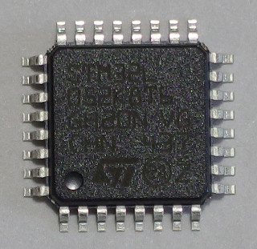
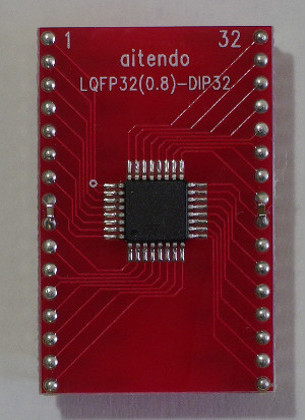
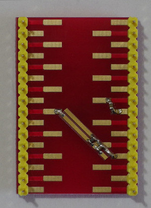

STM32L052K8T
The STM32L052K8T is a 32-bit ARM Cortex-M0+ microcontroller. It can run at a 32 MHz frequency without any external parts. It operates from a 1.8 to 3.6 V power supply.
The STM32L052K8T has the following in a 32-pin LQFP package.
- 64 KB flash memory
- 8 KB SRAM
- 2 KB data EEPROM
- 25x GPIOs
- 5x 16-bit timers
- 1x SysTick timer
- 1x SPI
- 1x I2C
- 2x USARTs
- 1x USB
- 10-channel 12-bit ADC
- 1-channel 12-bit DAC
- 2x comparators
- 7-channel DMA controller
- RTC
- CRC calculation unit
- Random number generator
- 14x capacitive sensing channels
- 2x watchdogs
- Firewall protection
- 32 kHz oscillator
- 16 MHz RC
- 37 kHz RC
- 65 kHz to 4.2 MHz RC
- 48 MHz RC
- PLL
LQFP to DIP adapter


DIP32 pinout
| DIP pin number | Name | 5 V | Additional functions | DIP pin number | Name | 5 V | Additional functions | |
|---|---|---|---|---|---|---|---|---|
| 1 | PA15 | Y | 32 | PA14 | Y | |||
| 2 | PB3 | Y | COMP2_INN | 31 | PA13 | Y | ||
| 3 | PB4 | Y | COMP2_INP | 30 | PA12 | Y | USB_DP | |
| 4 | PB5 | Y | COMP2_INP | 29 | PA11 | Y | USB_DM | |
| 5 | PB6 | Y | COMP2_INP | 28 | PA10 | Y | ||
| 6 | PB7 | Y | COMP2_INP, PVD_IN | 27 | PA9 | Y | ||
| 7 | BOOT0 | 26 | PA8 | Y | ||||
| 8 | VSS | 25 | VDD | |||||
| 9 | VDD | 24 | VSS | |||||
| 10 | PC14- OSC32_IN | Y | OSC32_IN | 23 | PB1 | Y | ADC_IN9, VREF_OUT | |
| 11 | PC15- OSC32_OUT | N | OSC32_OUT | 22 | PB0 | Y | ADC_IN8, VREF_OUT | |
| 12 | NRST | 21 | PA7 | Y | ADC_IN7 | |||
| 13 | VDDA | 20 | PA6 | Y | ADC_IN6 | |||
| 14 | PA0 | N | COMP1_INN, ADC_IN0, RTC_TAMP2 / WKUP1 | 19 | PA5 | N | COMP1_INN, COMP2_INN, ADC_IN5 | |
| 15 | PA1 | Y | COMP1_INP, ADC_IN1 | 18 | PA4 | N | COMP1_INN, COMP2_INN, ADC_IN4, DAC_OUT | |
| 16 | PA2 | Y | COMP2_INN, ADC_IN2 | 17 | PA3 | Y | COMP2_INP, ADC_IN3 |
Alternate function
| DIP pin number | Name | Alternate functions | DIP pin number | Name | Alternate functions | |
|---|---|---|---|---|---|---|
| 1 | PA15 | SPI1_NSS (AF0), TIM2_ETR (AF2), EVENTOUT (AF3), USART2_RX (AF4), TIM2_CH1 (AF5) | 32 | PA14 | SWCLK (AF0), USART2_TX (AF4) | |
| 2 | PB3 | SPI1_SCK (AF0), TIM2_CH2 (AF2), TSC_G5_IO1 (AF3), EVENTOUT (AF4) | 31 | PA13 | SWDIO (AF0), USB_OE (AF2) | |
| 3 | PB4 | SPI1_MISO (AF0), EVENTOUT (AF2), TSC_G5_IO2 (AF3), TIM22_CH1 (AF4) | 30 | PA12 | SPI1_MOSI (AF0), EVENTOUT (AF2), TSC_G4_IO4 (AF3), USART1_RTS_DE (AF4), COMP2_OUT (AF7) | |
| 4 | PB5 | SPI1_MOSI (AF0), LPTIM1_IN1 (AF2), I2C1_SMBA (AF3), TIM22_CH2 (AF4) | 29 | PA11 | SPI1_MISO (AF0), EVENTOUT (AF2), TSC_G4_IO3 (AF3), USART1_CTS (AF4), COMP1_OUT (AF7) | |
| 5 | PB6 | USART1_TX (AF0), I2C1_SCL (AF1), LPTIM1_ETR (AF2), TSC_G5_IO3 (AF3) | 28 | PA10 | TSC_G4_IO2 (AF3), USART1_RX (AF4) | |
| 6 | PB7 | USART1_RX (AF0), I2C1_SDA (AF1), LPTIM1_IN2 (AF2), TSC_G5_IO4 (AF3) | 27 | PA9 | MCO (AF0), TSC_G4_IO1 (AF3), USART1_TX (AF4) | |
| 7 | BOOT0 | 26 | PA8 | MCO (AF0), USB_CRS_SYNC (AF2), EVENTOUT (AF3), USART1_CK (AF4) | ||
| 8 | VSS | 25 | VDD | |||
| 9 | VDD | 24 | VSS | |||
| 10 | PC14-OSC32_IN | 23 | PB1 | TSC_G3_IO3 (AF3) | ||
| 11 | PC15-OSC32_OUT | 22 | PB0 | EVENTOUT (AF0), TSC_G3_IO2 (AF3) | ||
| 12 | NRST | 21 | PA7 | SPI1_MOSI (AF0), TSC_G2_IO4 (AF3), TIM22_CH2 (AF5), EVENTOUT (AF6), COMP2_OUT (AF7) | ||
| 13 | VDDA | 20 | PA6 | SPI1_MISO (AF0), TSC_G2_IO3 (AF3), TIM22_CH1 (AF5), EVENTOUT (AF6), COMP1_OUT (AF7) | ||
| 14 | PA0 | TIM2_CH1 (AF2), TSC_G1_IO1 (AF3), USART2_CTS (AF4), TIM2_ETR (AF5), COMP1_OUT (AF7) | 19 | PA5 | SPI1_SCK (AF0), TIM2_ETR (AF2), TSC_G2_IO2 (AF3), TIM2_CH1 (AF5) | |
| 15 | PA1 | EVENTOUT (AF0), TIM2_CH2 (AF2), TSC_G1_IO2 (AF3), USART2_RTS_DE (AF4), TIM21_ETR (AF5) | 18 | PA4 | SPI1_NSS (AF0), TSC_G2_IO1 (AF3), USART2_CK (AF4), TIM22_ETR (AF5) | |
| 16 | PA2 | TIM21_CH1 (AF0), TIM2_CH3 (AF2), TSC_G1_IO3 (AF3), USART2_TX (AF4), COMP2_OUT (AF7) | 17 | PA3 | TIM21_CH2 (AF0), TIM2_CH4 (AF2), TSC_G1_IO4 (AF3), USART2_RX (AF4) |